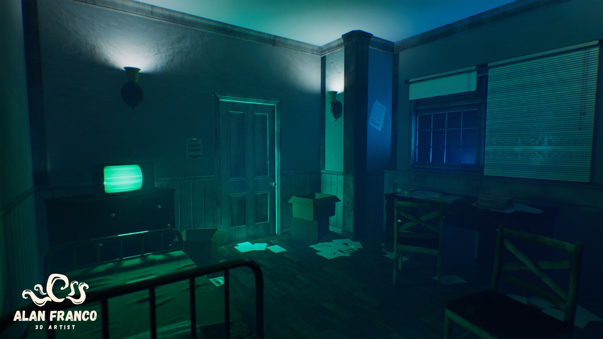
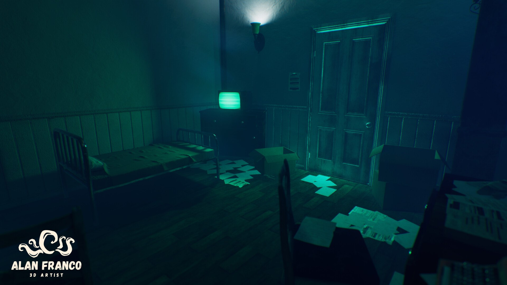
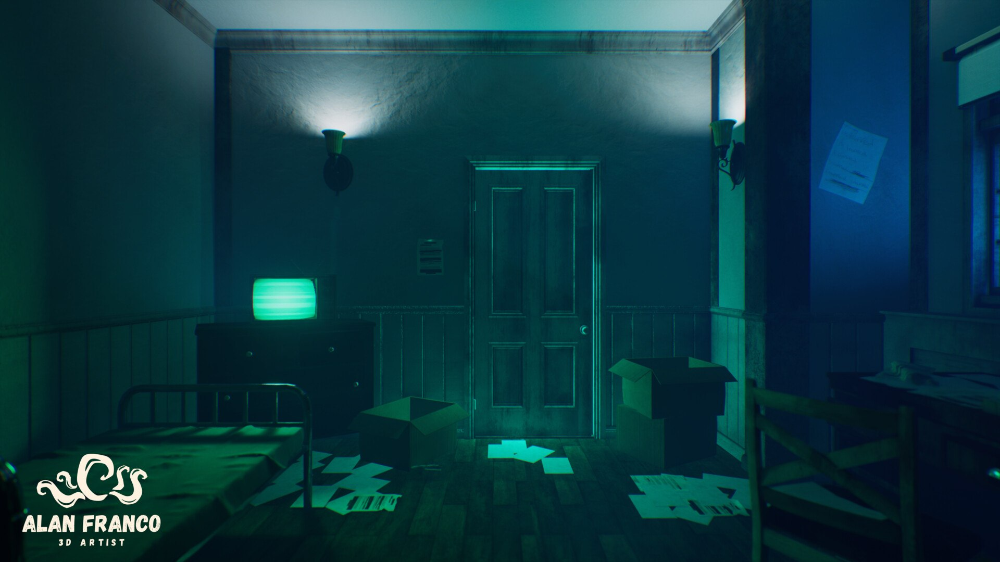
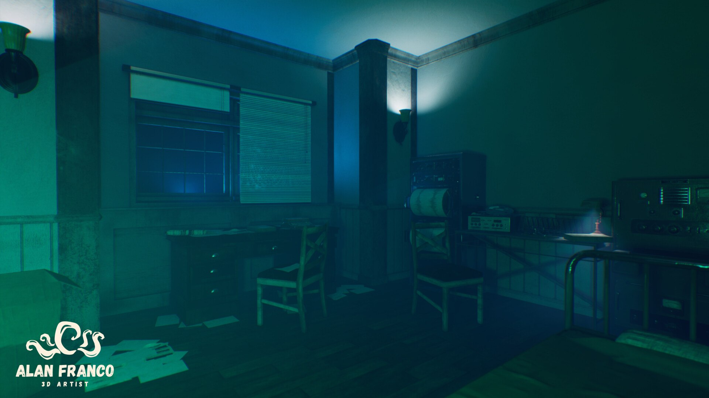
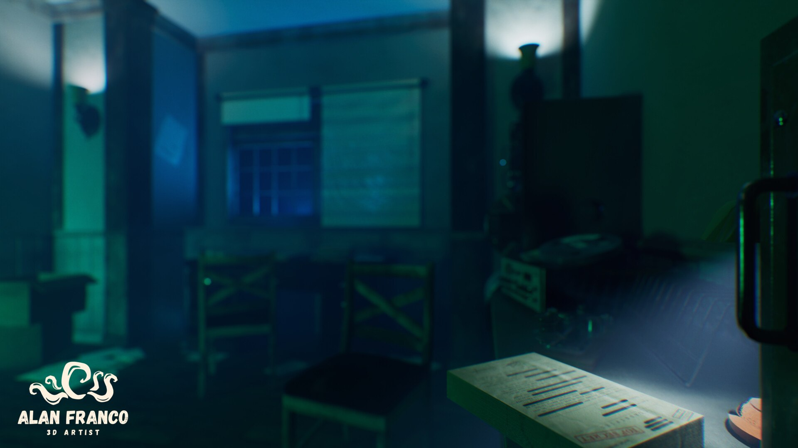
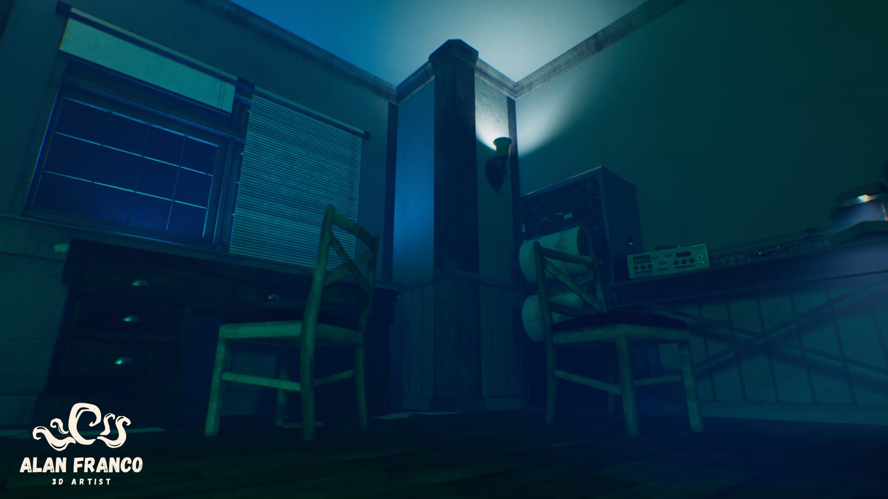
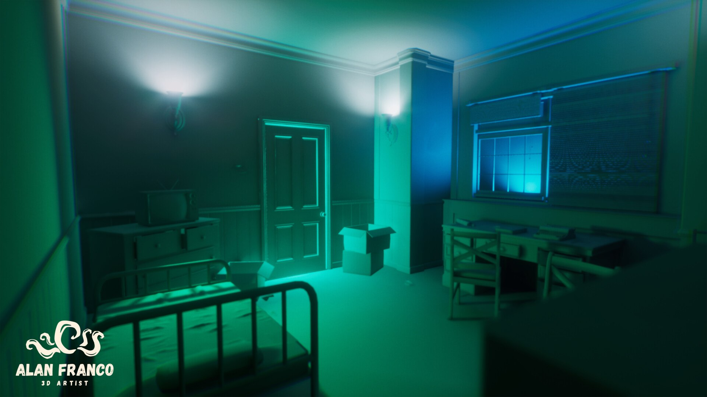
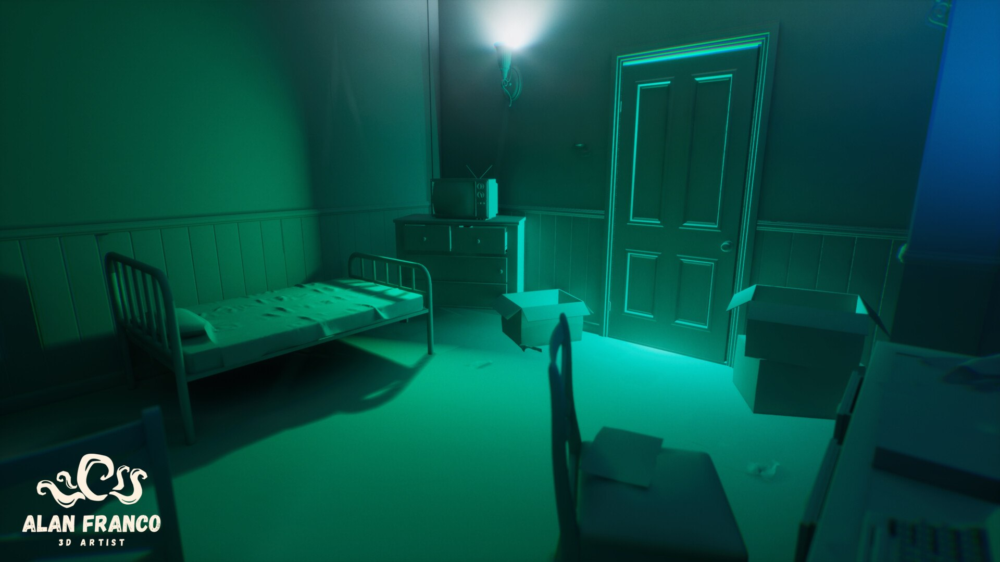
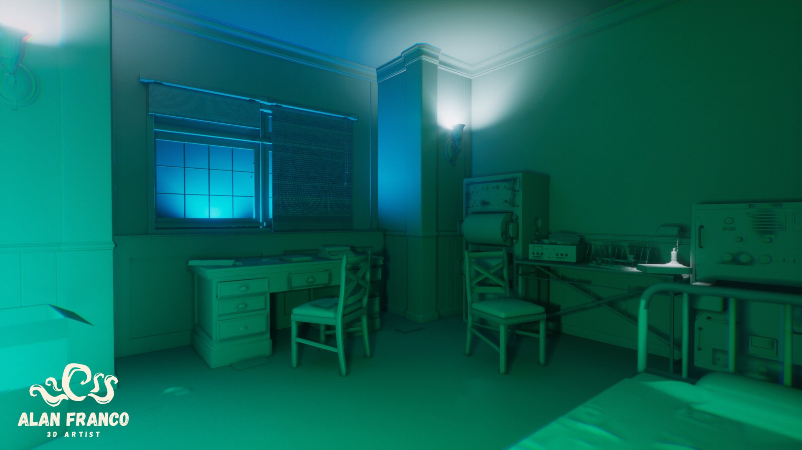

Suspenseful Room Environment
A suspense-filled room built to master lighting in Unreal Engine.
- Role
- Environment art and lighting
- Tools
- Blender, Substance, Unreal Engine
- Year
- 2024

Overview
A 3D environment built to explore suspense: an eerie, mysterious room where light and shadow do most of the storytelling.
I have been focusing on lighting techniques, and this project helped me feel much more comfortable with them. I modeled everything in Blender, textured it in Substance, and then integrated, lit and rendered the scene in Unreal Engine, which was key to reaching the realism and immersion I was after.
The room is lit by a few wall sconces, a cold blue glow from the window and the green light of an old TV. A metal bed, a desk with a typewriter, radio equipment and scattered, partly redacted documents tell a story without any character in the scene.
Horror and suspense are a recurring interest of mine, and this room was a way to go deeper into how a scene can build tension through lighting, composition and atmosphere.
What I did
- Modeled the room and its props in Blender.
- Textured the assets in Substance.
- Integrated everything in Unreal Engine and built the lighting to create an eerie, mysterious mood.
- Dressed the room with storytelling props: radio and recording equipment, a typewriter, an old TV, scattered documents and cardboard boxes.
- Built the mood with a cold blue and green palette, using the wall sconces and the window as the main light sources.
- Rendered the final images in Unreal Engine, plus clay renders to show the modeling and the lighting separately.
- Used the project to practice and refine lighting techniques.
Gallery







